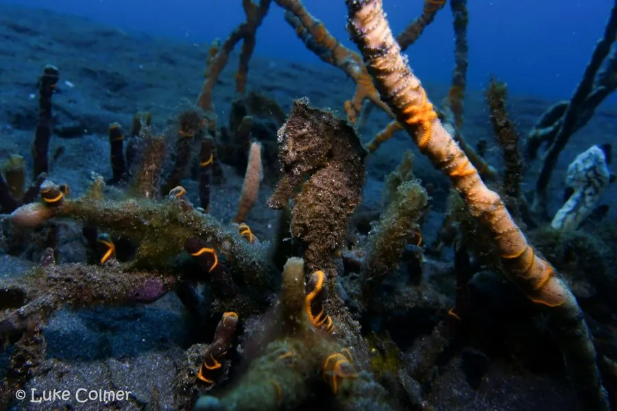

鱼类 · 动物界
斑海马 Hippocampus kuda

印度洋与太平洋沿岸的海马，体色可随环境由黄转褐、布满细密斑点，雄鱼腹部的育儿袋负责孵育后代，因药材贸易被大量捕捞。
- 分类
- 门脊索动物门纲硬骨鱼纲目刺鱼目科海龙科属海马属
- 栖息环境
- 河口、红树林、海草床与浅海礁区，常缠附于海草或红树枝条
- 地理分布
- 印度洋与西太平洋沿岸，从印度、东南亚至中国南部、日本与澳大利亚
- 保护级别
- IUCN 易危（VU）；CITES 附录Ⅱ；中国国家二级保护动物
物种志
斑海马体长 15–30 厘米，是体型较大的海马之一。身体侧扁、呈直立姿态，头部与躯干约成直角，吻部管状而长，头顶有短小的冠状突起；躯干与尾部覆骨板，尾部可卷曲缠绕海草。体色多变，可从淡黄、橙黄到褐绿、灰黑，体表散布深色细点与不规则斑块，随栖息环境与情绪改变。背鳍小，扇动频率极高，用于缓慢游动。
它们分布于印度洋与西太平洋的河口、红树林、海草床与浅海礁区，常用卷尾缠附在海草、红树枝条或珊瑚上，靠吸食小型甲壳类为生。斑海马是唯一由雄性孵育后代的类群之一：雌鱼把卵产入雄鱼腹部的育儿袋，雄鱼受精并孕育约两至四周后“分娩”，产出数十至上千尾幼鱼。由于中药材与观赏贸易需求巨大，加之沿岸栖息地退化，其野生种群明显下降，现受国际公约管制。
形态与习性
- 体长约 15–30 cm
- 食性小型甲壳类，如糠虾、端足类与幼虾
- 繁殖雌鱼产卵入雄鱼育儿袋，雄鱼孕育约 2–4 周后产出幼鱼
- 产仔数每胎数十至上千尾幼鱼
- 体色可由淡黄转为褐绿或灰黑，随环境改变
- 运动靠高频扇动背鳍缓慢游动，尾部可卷附固定物
- 寿命约 3–5 年
趣味知识
- 斑海马由雄鱼怀孕生子，雌鱼只负责把卵送进雄鱼的育儿袋。
- 它的体色会随周围海草的颜色变化，从淡黄到褐绿都能调。
- 海马靠高频扇动背鳍前进，游速极慢，常被水流带着走。